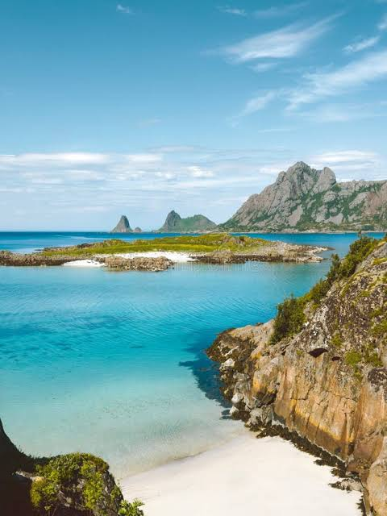

Blog Post Summary
Exploring Fire Island National Seashore was an unforgettable coastal escape that blended untouched natural beauty with car-free island charm. The highlight of the adventure was wandering the elevated boardwalks through the rare Sunken Forest at Sailors Haven before climbing the historic Fire Island Lighthouse for sweeping views of the Atlantic Ocean and Great South Bay. Between spotting local deer along the sandy trails and relaxing on the quiet, windswept beaches of the Otis Pike High Dune Wilderness, the trip felt like a true hidden getaway.
Gallery
-

-

-

Ready to Eat
Nothing beats eating great food with warm sand between your toes and the sound of crashing waves in the background. After hours in the sun and surf, simple coastal bites taste twice as good—like tangy fish tacos piled with crisp slaw and lime, ice-cold watermelon slices, or smoky grilled skewers shared straight from a beach cooler. Whether you are picking up fresh local specialties from a beachfront stand or unpacking a hearty picnic blanket spread, beach food turns an ordinary afternoon by the water into a memory you look forward to all year. Good Food Article
Explore the Adventure
Explore the Park Step outside, take a deep breath of fresh air, and rediscover the simple joy of nature at your local park. Whether you are looking for a peaceful morning walk beneath a canopy of trees, a scenic spot to enjoy a weekend picnic, or an open space for kids to run and play, the park offers a welcome escape from the daily rush. Every visit is a chance to unplug from screens, recharge your mind, and connect with your community in a vibrant, welcoming environment. Pack a snack, lace up your walking shoes, and see what awaits you just around the corner.